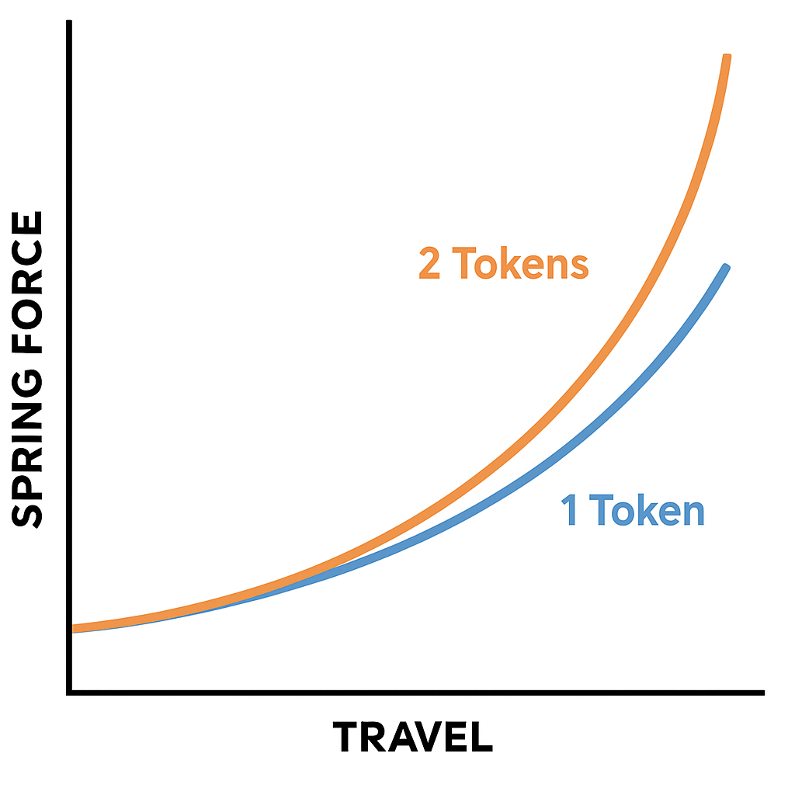

Una forcella ben regolata migliora comfort, grip e controllo. Ecco il procedimento passo-passo per tirare a lucido il tuo setup.
Il SAG indica quanto la forcella si abbassa sotto il tuo peso. Misura con un O-ring sullo stelo.
Usa una pompa specifica da sospensioni e segui la tabella del produttore come punto di partenza. Poi regola in base al SAG.
Il rebound regola la velocità di ritorno della forcella. Troppo veloce = rimbalzo, troppo lento = "inchiodamento". Regola la manopola rossa 2–3 click alla volta fino a un comportamento bilanciato.
Agisce sulla resistenza della forcella:
Regola con attenzione: pochi click alla volta e valuta come reagisce in guida.
I token o volume spacers sono inserti in plastica che si inseriscono nella camera d’aria positiva della forcella. Servono a ridurre il volume d’aria disponibile, rendendo la forcella più progressiva: morbida all’inizio e più resistente nel finale.
Con pochi o nessun token, la forcella affonda in modo lineare e più facilmente. Aggiungendo token, la parte finale della corsa diventa più sostenuta, aiutando a evitare il fondo corsa nei salti o nelle discese molto tecniche.
Ricorda: il numero massimo di token è indicato dal produttore. Inizia con uno, prova e valuta. I token non modificano il SAG, ma solo la progressione della curva di compressione.
| Parametro | Funzione | Regolazione |
|---|---|---|
| SAG | Affondamento statico | Pompa aria per ottenere la % giusta |
| Pressione | Supporto iniziale | Pompa specifica da sospensioni |
| Rebound | Velocità di ritorno | Manopola rossa |
| Compressione | Resistenza all’affondo | Manopola blu (LSC/HSC) |
| Token | Progressività e fondo corsa | Inserisci o rimuovi uno alla volta |
Annota ogni modifica e prova diversi setup su percorsi vari: ogni ambiente richiede un piccolo aggiustamento.
← Torna ai consigli